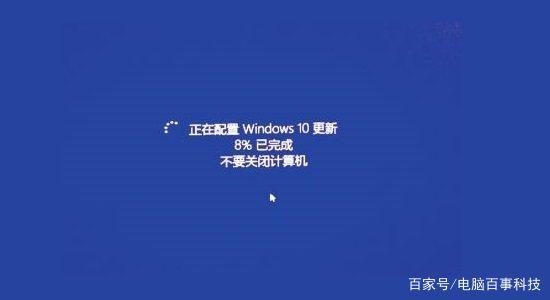
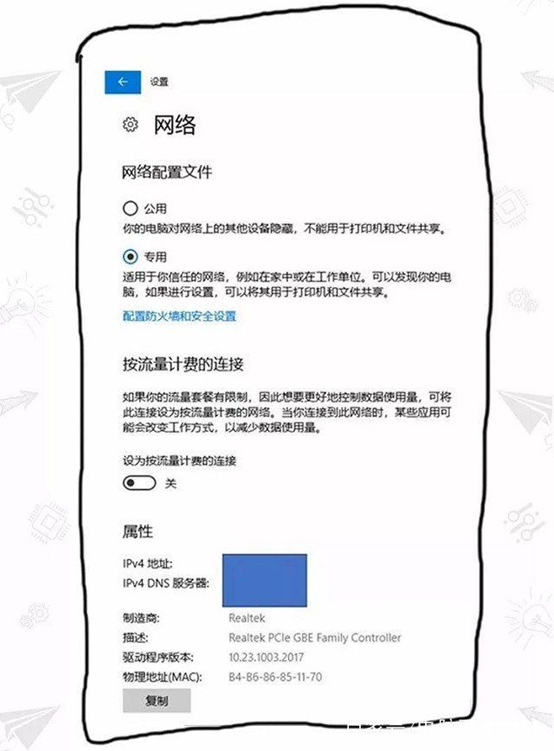
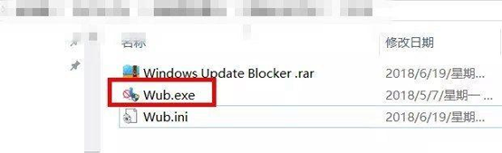
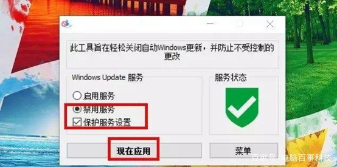

目前的电脑很多都已经使用了Win10系统，而在使用Win10系统的过程中，系统时不时的就会提醒自动更新。那么Win10自动更新怎么关闭?一起来看看彻底关闭自动更新方法。
一般来说，在提醒自动更新时会有忽略更新的按钮，但通过手动禁止Windows update自带更新服务往往会出现死灰复燃的情况，而如果出现误操作点到了更新按钮，动不动就需要等待很久的更新，使用上很不方便。彻底禁止Win10自动更新的方法如下：
关于如何关闭Win10自动更新，目前网上有2种比较流行的方法：
1、禁用Windows Updata服务；2、通过组策略禁止更新。
但实践证明这2种方法，认真你就输了，因为直接把Windows Update服务关闭并不靠谱，有时候又莫名其妙自动开启了，也就是前面说说的“似乎复燃”。而第二种通过组策略阻止自动更新方法，目前只有Win10专业版用户才用的上，家庭版用户并没有组策略设置。显然，这2个锅无疑都要微软来背。

自带更新
烦人的Windows自带更新（要等很长时间 内心OS：不更新也罢！）
那么如何彻底禁止Win10自动更新呢？方法也是有的，下面附上靠谱的设置方法。
方法一：把网络设置为“按流量计费的连接”
首先是最极端、最彻底的，也就是使用“按流量计费的连接”，这是微软为流量套餐有限制的用户提供的，既然要更好的控制数据使用了，当然不能随心所欲自动升级。
开启方法：
1、在Win10任务栏右侧的网络图标，点击鼠标右键；2、然后选择“打开网络和Internet设置”；3、接下来选择“更改连接属性”；4、最后选择“开启流量计费”就可以了。

完成以上设置后，你就再也不用担心Windows自带更新或自带下载应用更新了。
方法二：使用一键禁止Windows更新工具
如果觉得上面的设置方法麻烦，小白不想去设置的话，还有更简单的方法，只要下载一款“一键禁止Windows更新”的小工具，就可以禁止Windows自带更新了，小白懒人必备。
1、首先下载禁止Windows自动更新工具，下载之后，然后双击“exe”文件，运行工具。

小工具
小工具下载地址，可以在后台私信小编获取哦。
2、然后选择“禁用服务”，默认勾选“保护服务设置”，防止禁用状态被Windows系统偷偷更改。
3、完成上面的设置后，点击“现在应用”保存设置就可以了。

设置简单
4、如果今后又要开启Windwos自动更新功能，只要打开工具，然后点击“启用服务”就可以恢复了，操作非常简单，懒人必备。
此方法才是真真正正地能彻底禁止win10自动更新的方法，如果你也受win10自动更新的困扰，可以尝试下我们的方法哦。好了，这次的内容，系统迷就讲到这里了，更多的Windows系统教程，我们下次再继续分享吧。